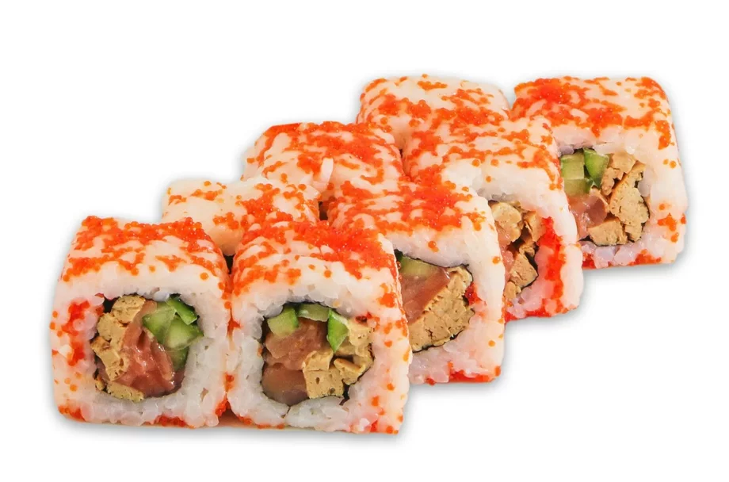
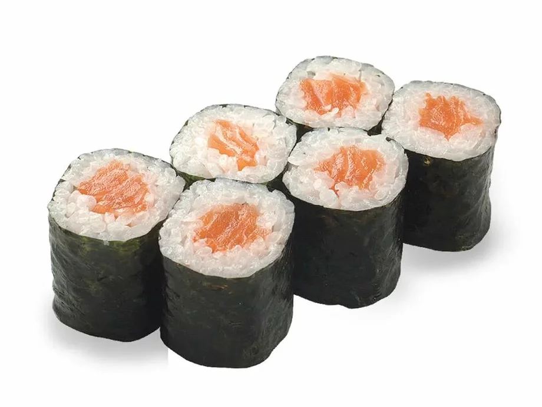
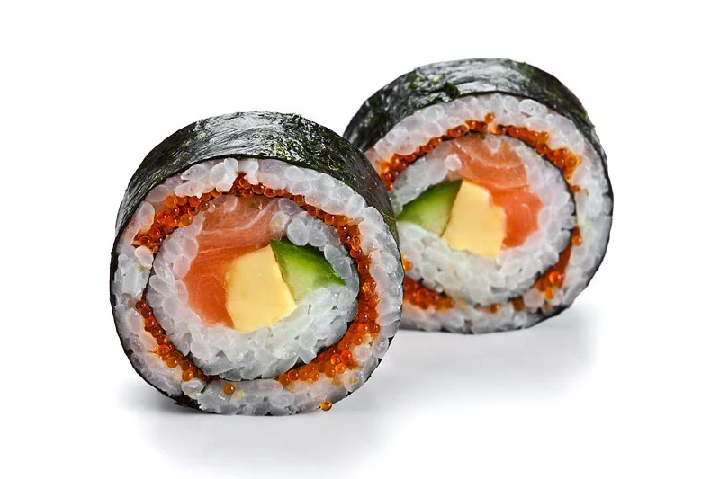

|  |
УрамакиОтличается от других разновидностей роллов тем, что начинка, завернутая в лист нори, находится внутри, а рис снаружи. Для приготовления такого ролла используется маленький лист нори или половина большого. |
|  |
ХосомакиХосомаки роллы обычно заворачиваются так, чтобы лист нори был снаружи, а диаметр порций составлял 2—3 сантиметра, а количество кусочков — 6 |
|  |
ФутомакиЭто один из самых больших роллов, внешне похожий на Макидзуси, с диаметром порции около 5 сантиметров и разнообразными начинками в различных комбинациях. |
Суши-бар«Йокогама»